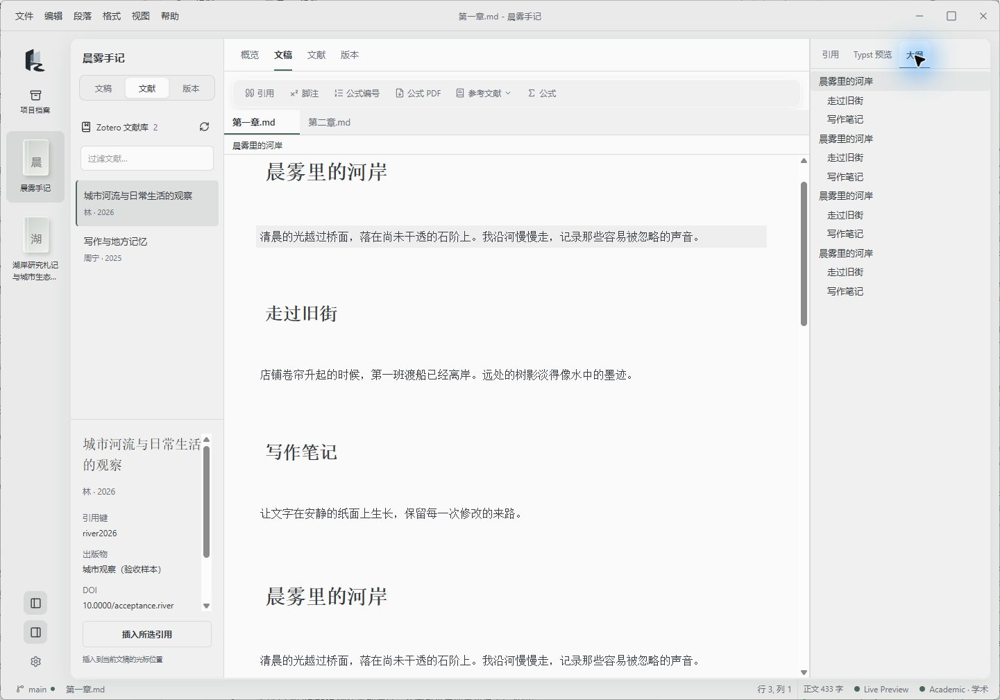
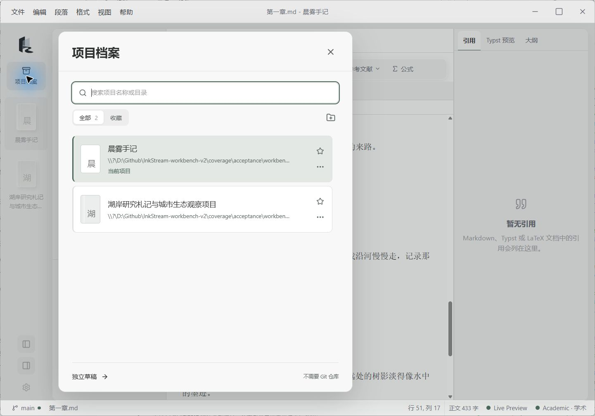
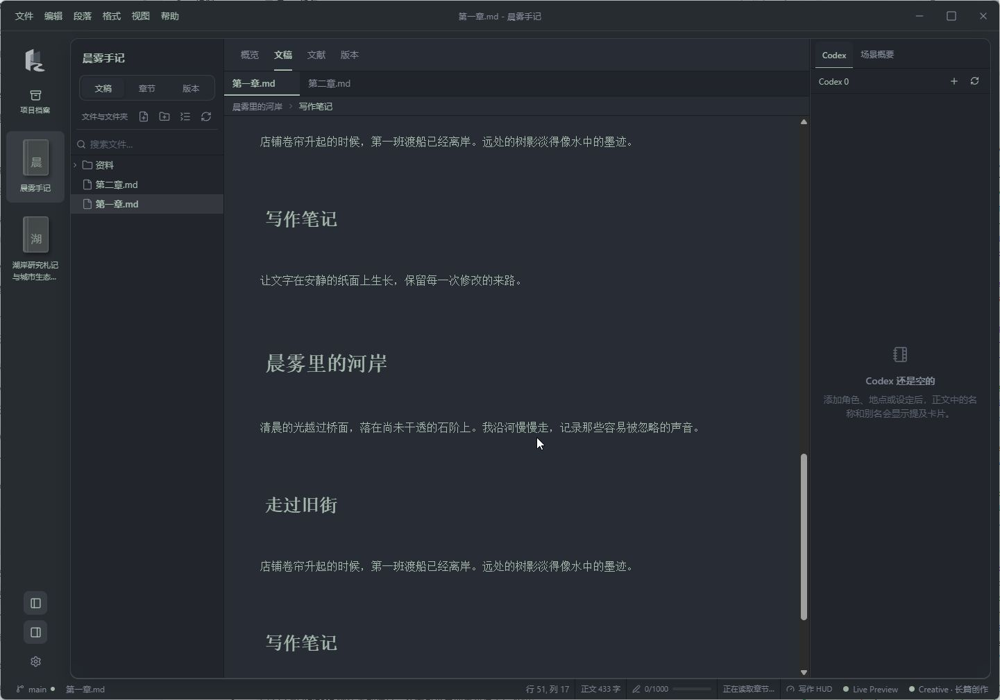

项目与恢复
收藏、最近项目与独立会话。切换前保存，回来时恢复文稿、选区和布局；保存失败时留在原项目。
了解项目与恢复概览 / 文稿 / 文献 / 版本
查阅资料、回看修改，再返回正文。光标、选区和撤销记录都留在原处。



打开一个内容文件夹，就有了自己的写作空间。
也可以先写一份独立草稿，稍后再安放它。
三种写作方式
模式调整布局和工具，不改变文稿格式。
简易模式可以进一步收起高级功能。
记录想法、整理笔记、完成日常文档。源码与实时预览可切换，文件树、大纲和双向链接帮助你找到上下文。
编辑与实时预览 ↗在正文旁查看 Zotero 文献，插入引用、脚注和公式编号，生成 GB/T 7714、APA 或 Vancouver 参考文献。
Zotero 与学术工具 ↗用章节与场景组织长文，管理角色和设定，记录场景概要与字数目标。打字机和专注模式在「视图」菜单中显示启用状态。
章节、场景与角色设定 ↗写下来的文字，也能连接到读过的文献、想过的公式和整理过的知识。
用双向链接连接文稿，查看反向链接与知识图谱。资料目录保持纯文本，本机索引帮助查找。
双向链接与知识网络 ↗Zotero 文献库、引用面板与参考文献。使用本机引用功能需要 Zotero 与 Better BibTeX。
配置文献工具 ↗支持 KaTeX、Typst 与 LaTeX 数学块，以及公式编号、文内引用和预览。
数学排版与支持范围 ↗打开一本书，留下一枚书签。
把完成的文稿，交付成合适的格式。
更多操作方式，见使用文档。
正文保留在你选择的内容目录。项目名称、封面、文稿会话和搜索索引保存在本机应用数据目录。Git 远端同步和 Zotero 连接需要相应配置。
当前提供 Windows x64、macOS Apple Silicon 和 Linux x64 安装包。Windows 安装包尚未做 Authenticode 签名，macOS 尚未公证，首次运行可能出现开发者提示。应用内自动更新有独立的载荷签名校验。详见安装与更新说明。
源码按 PolyForm Noncommercial License 1.0.0 提供。可在 GitHub Issues 反馈问题，也欢迎通过赞助页支持开发。赞助不影响功能访问。